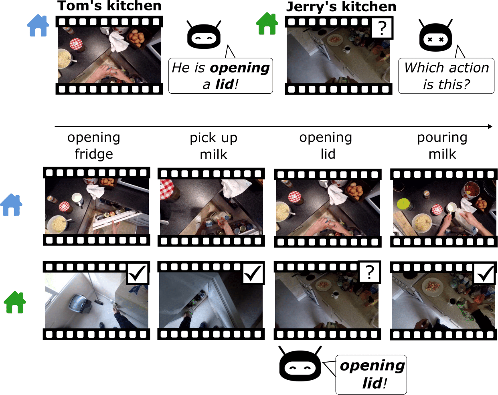

Accepted at the Pattern Recognition Letters Journal, 2025
Recognizing human activities from visual inputs, particularly through a first-person viewpoint, is essential for enabling robots to replicate human behavior. Egocentric vision, characterized by cameras worn by observers, captures diverse changes in illumination, viewpoint, and environment. This variability leads to a notable drop in the performance of Egocentric Action Recognition models when tested in environments not seen during training. In this paper, we tackle these challenges by proposing a domain generalization approach for Egocentric Action Recognition. Our insight is that action sequences often reflect consistent user intent across visual domains. By leveraging action sequences, we aim to enhance the model's generalization ability across unseen environments. Our proposed method, named SeqDG, introduces a visual-text sequence reconstruction objective (SeqRec) that uses contextual cues from both text and visual inputs to reconstruct the central action of the sequence. Additionally, we enhance the model's robustness by training it on mixed sequences of actions from different domains (SeqMix). We validate SeqDG on the EGTEA and EPIC-KITCHENS-100 datasets. Results on EPIC-KITCHENS-100 show that SeqDG leads to +2.4% relative average improvement in cross-domain action recognition in unseen environments, and on EGTEA the model achieved +0.6% Top-1 accuracy over SOTA in intra-domain action recognition.